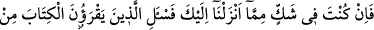
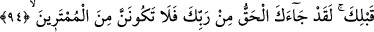
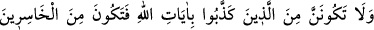
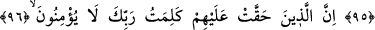
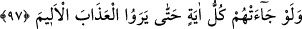
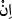

SAKIN YALANLAYANLARDAN
OLMA
94. Eğer sen, sana indirdiğimizden kuşkuda isen senden önce Kitab’ı okuyanlara
sor. Andolsun sana Rabb’inden hak geldi, sakın şüphecilerden olma!
95. Ve sakın Allah’ın âyetlerini yalanlayanlardan olma, yoksa ziyana
uğrayanlardan olursun.
96. Gerçekten haklarında Rabbinin sözü (hükmü) sâbit olanlar.
97. Onlara bütün mûcizeler gelmiş olsa bile, acı azâbı görünceye kadar
(inanmazlar).
“Eğer sen, sana indirdiğimizden kuşkuda isen” yâni farz-ı muhal sen aralarında
Fir’avn ve kavminin kıssası ile İsrâiloğulları’na dâir haberlerin de bulunduğu
kıssalardan şüphede isen, demektir.
Çünkü şart ifade eden edatların mânâsı, ikisinden birinin mümkün olup olmadığına
değinmeden bir şeyi başka bir şeye bağlamaktır. Nitekim bazen şu âyette olduğu gibi her
iki taraf; yani şart ve cevap da muhal olabilir. “Şayet Rahman’ın çocuğu olsaydı, ona
ilk ibâdet eden ben olurdum.” (ez-Zuhruf, 43/81)
“senden önce Kitab’ı okuyanlara sor.” Çünkü bu indirdiklerimiz, onların
kitaplarında da sana indirdiğimiz şekliyle sabit ve onlara göre de gerçektir.
Bu ifadeden maksad, her ne kadar böyle bir şeye aslâ ihtiyaç olmasa da kitaplarında
yazılı olduğuna göre yahûdi âlimlerinin yapacakları şehâdetle Hz. Muhammed (s.a.)’in
peygamber olduğunu ortaya çıkarmaktır. Ya da O’nun peygamberliğinin doğru olduğu
konusunda ehl-i kitab’ı derin/kesin bilgi sâhipleri olarak tavsif etmektir. Yahut da Hz.
Peygamber (s.a.)’i şevklendirip sâhip olduğu yakînde daha fazla sâbit kılmaktır. Yoksa
Hz. Peygamber (a.s.)’dan şüphe sâdır olmasına cevâz vermek anlamında değildir. Hz.
Peygamber (a.s.) da bu yüzden “Ne şüphe ederim, ne de sorarım!”[75] buyurmuştur.
Zâdü’l-mesîr’de şöyle denilir: “Âyetteki “” olumsuzluk ifâde eden “  ”
”
anlamındadır. Yâni “Senin şek ve şüphen yoktur. Fakat basîretinin ziyâdeleşmesi için